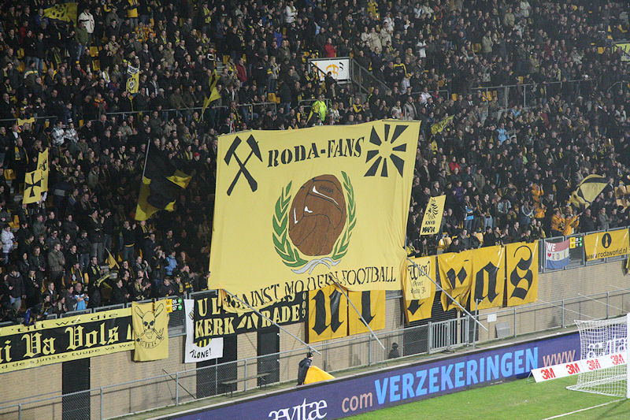
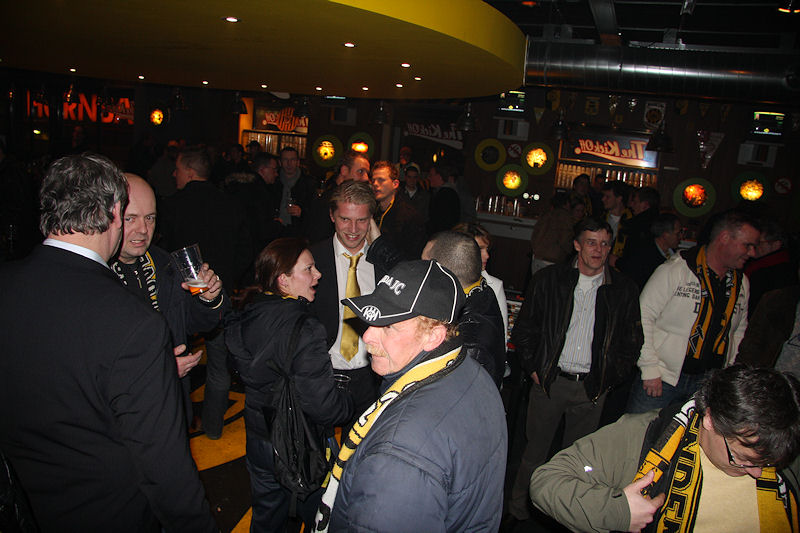

Spandoek tegen het moderne voetbal op west.
Sfeer op oost.
Sparta had vijftig supporters mee.
Junker scoort een knap, maar buitenspel doelpunt.
Delorge heeft Junker bereikt maar deze loopt vast op de Sparta-defensie. De
bal schuift door waarna...
... Janssen met uitgeschoven benen 1-0 binnenglijdt, (32').
Een steekpass van Strootman op Falkenburg wordt knap gekeerd door de
onvervaard uitkomende Tyton.
Een snoeihard schot van Bodor raakt de lat.
Janssen heeft de bal na een verdedigingsfout van Touzani op Junker afgelegd
die simpel 2-0 binnenschiet, (65').
Het doelpunt van Junker gezien vanachter de jool door Etienne Zegers.
Schuiver van Bodul gaat maar juist naast het doel.
Kort nadat Sutchuin Djoum vervangen is door Svard (zijn ouverture bij Roda)
krijgt hij een gele kaart bij dit opstootje wat een gevolg is van de
weigering van Sparta om de bal uit het spel te brengen vanwege een blessure
van Junker.
Kah is te laat bij Falkenburg die 1-2 scoort, (89').
Humba tetereee.

De Kickoff kreeg bezoek van Mardulier (midden met sjlieps).
En van Vormer.